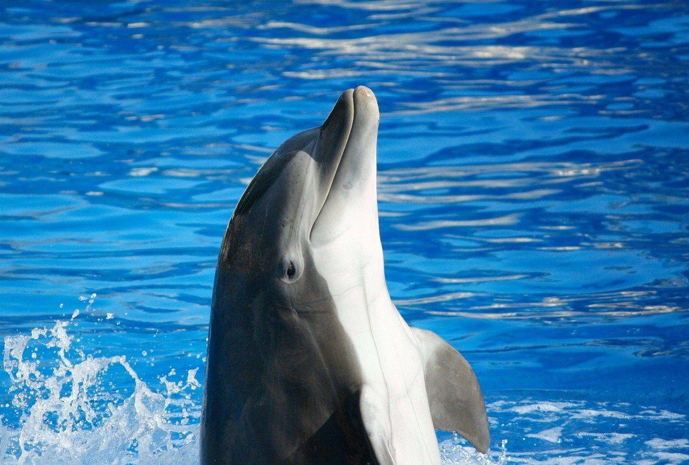
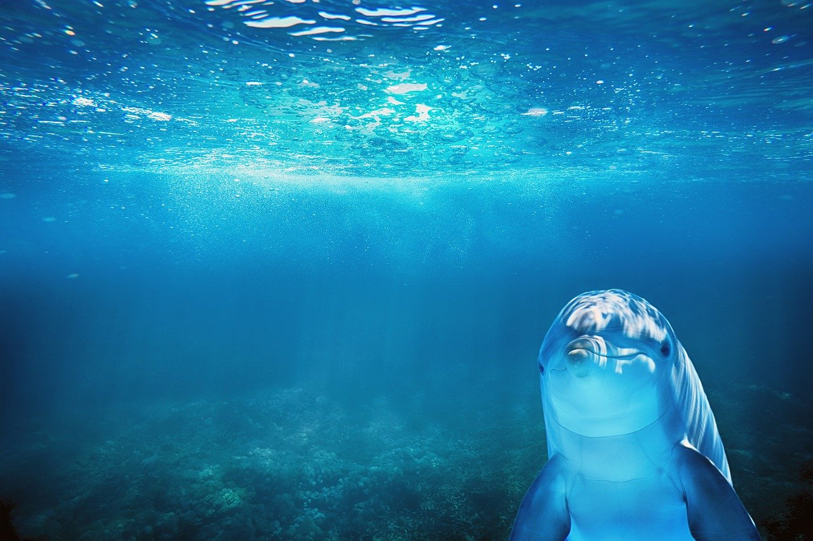
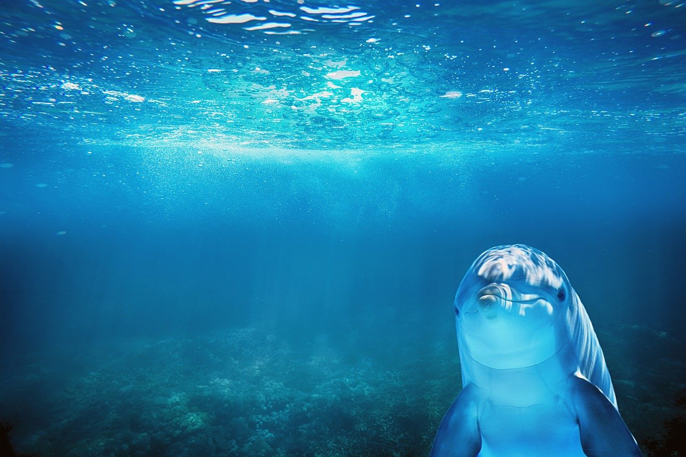
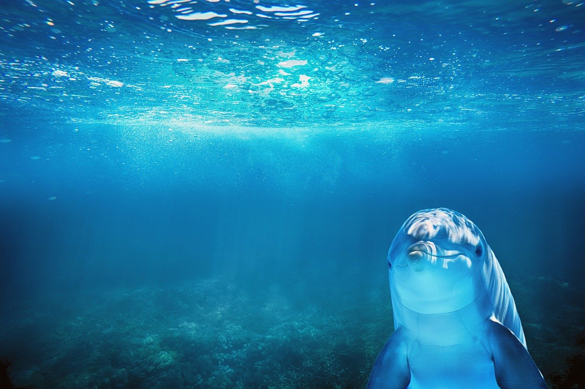
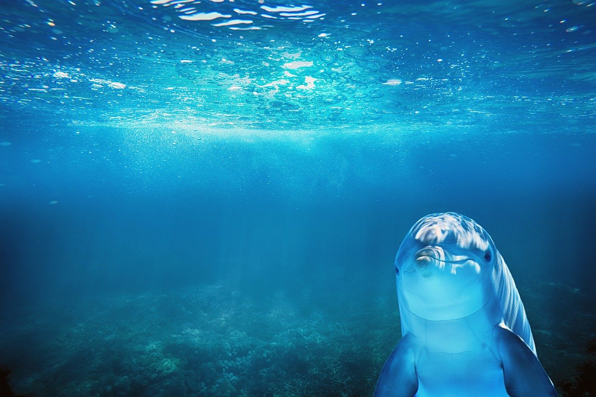

 



Dolphins belong in the class of marine mammals and mainly reside in the world's oceans, seas and rivers. Since dolphins are mammals, they need to visit the surface in order to breathe air as they can not extract oxygen from the water. The dolphins diet consits of fish, crustaceans, and squid that they do not chew and swallow instead. Dolphins are also classified as a highly intelligent animals with their display of strong communication, perception and problem-solving. They can make different noises in order to communicate and socialize with other dolphins, this includes whistles, clicks, and using their tails and body.